Per variant: het figuur op 1:1 in de hero (420 px hoog, zoals op de site) en 200%-uitsnedes van de randen op licht, donker en op de hero-achtergrond. Zeg het nummer.
Apple Vision instancemasker en persoonsmatte, alfa met een kleurgeleid filter langs de echte contour, rand aangescherpt tot 1-2 px, lichte randkleur weggerekend. Dit is de versie die nu in de hero staat.
Meting: randring 163 vs binnen 121, 377 zachte randpixels, 1875 halftransparant
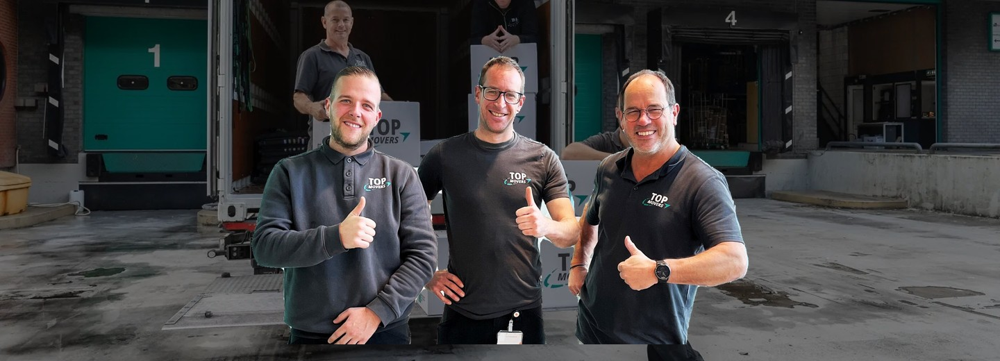
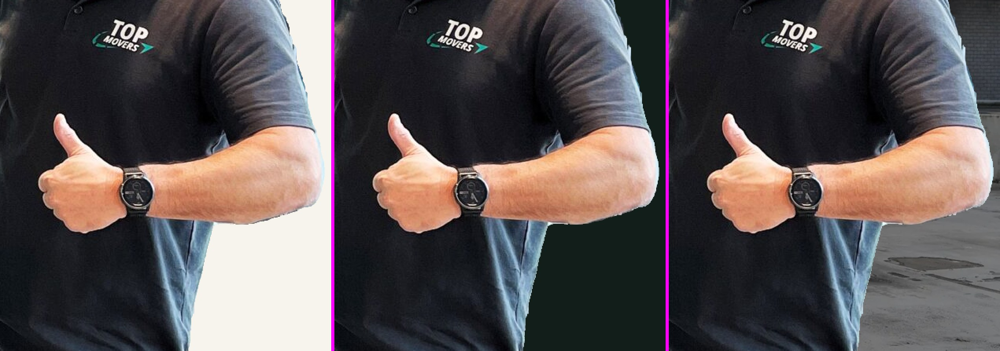
Zelfde pijplijn, maar op een 2x opgeschaalde bron gerekend en daarna terug naar native: gladdere subpixelrand op haar, bril en vingers.
Meting: randring 152 vs binnen 118, 3553 zachte randpixels, 14499 halftransparant
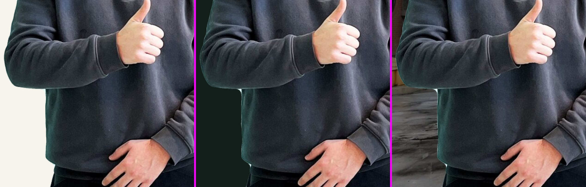
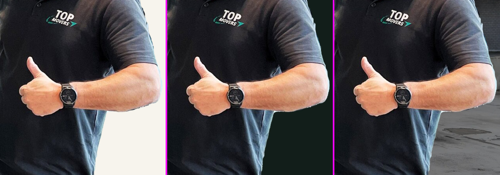
Klassieke closed-form matting: de alfa in een band van 16 px rond het Vision-masker wordt uit de kleurstatistiek van de foto zelf opgelost, en de voorgrondkleur langs de rand wordt apart geschat (geen achtergrondbesmetting). Zachtere, natuurlijke overgang op haar en huid.
Meting: randring 135 vs binnen 108, 2345 zachte randpixels, 23330 halftransparant
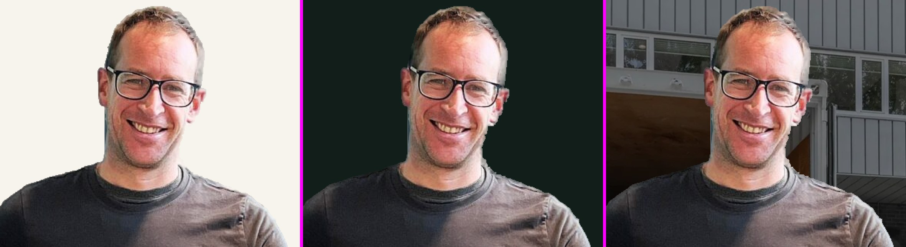
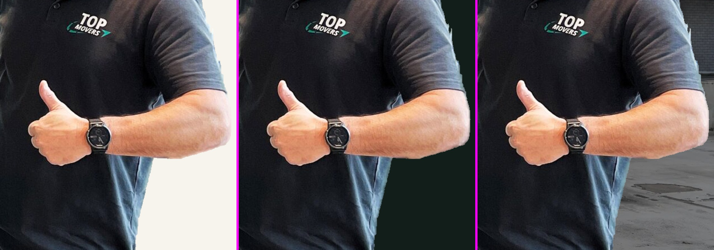
Zelfde drie mannen, kleding en houding, opnieuw gefotografeerd door het model op een egale magenta plaat; daardoor is de uitsnede tussen armen en lijven per definitie schoon. Gelijkenis en borstprint op 100% gecontroleerd.
Meting: randring 93 vs binnen 110, 20896 zachte randpixels, 55052 halftransparant
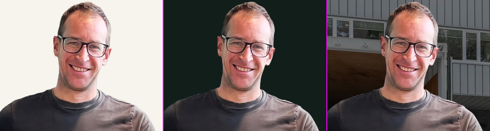
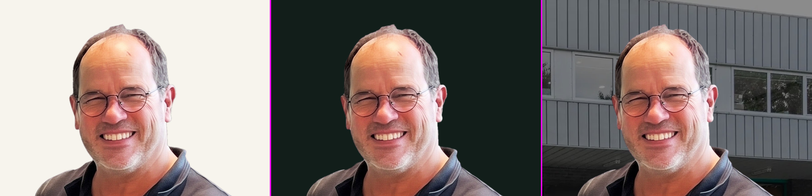
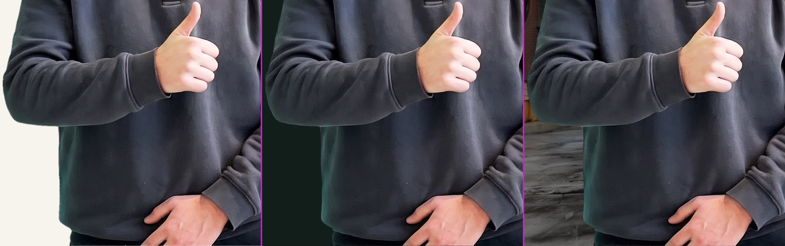
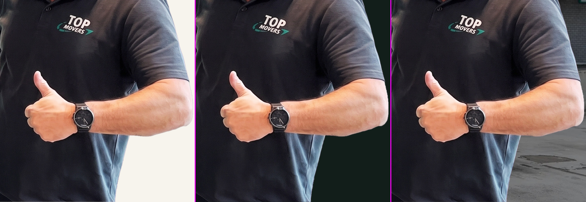
Zelfde drie mannen, kleding en houding, opnieuw gefotografeerd door het model op een egale magenta plaat; daardoor is de uitsnede tussen armen en lijven per definitie schoon. Gelijkenis en borstprint op 100% gecontroleerd.
Meting: randring 96 vs binnen 110, 20648 zachte randpixels, 53992 halftransparant
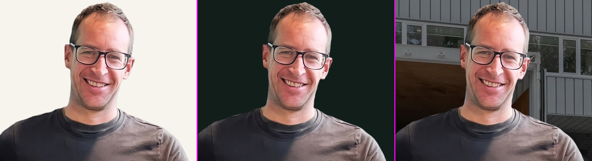
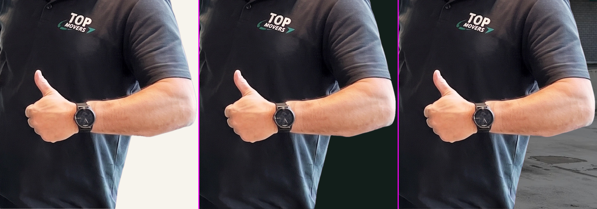
Zelfde drie mannen, kleding en houding, opnieuw gefotografeerd door het model op een egale magenta plaat; daardoor is de uitsnede tussen armen en lijven per definitie schoon. Gelijkenis en borstprint op 100% gecontroleerd.
Meting: randring 91 vs binnen 103, 22815 zachte randpixels, 58609 halftransparant
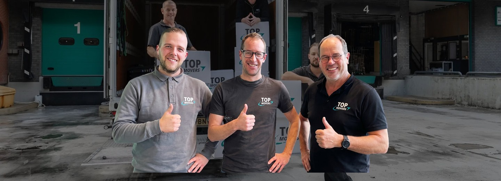
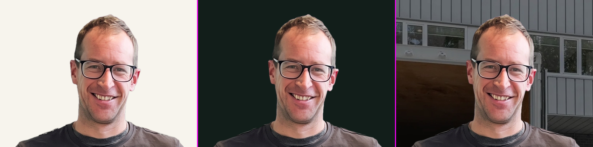
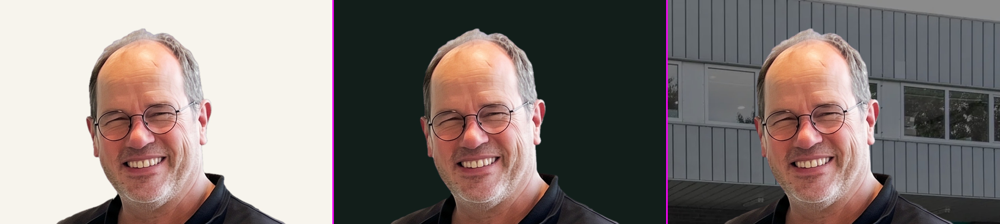
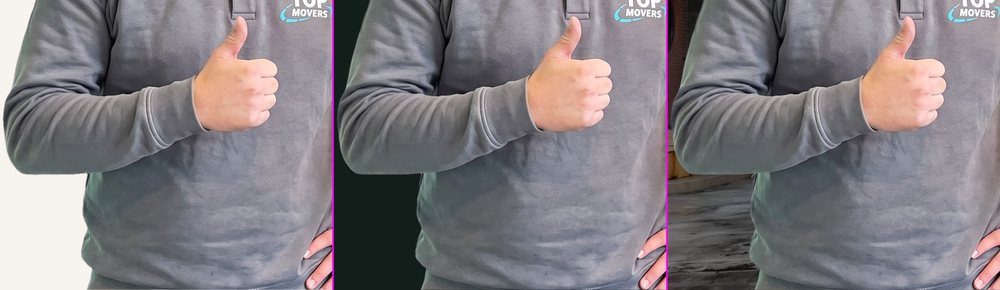
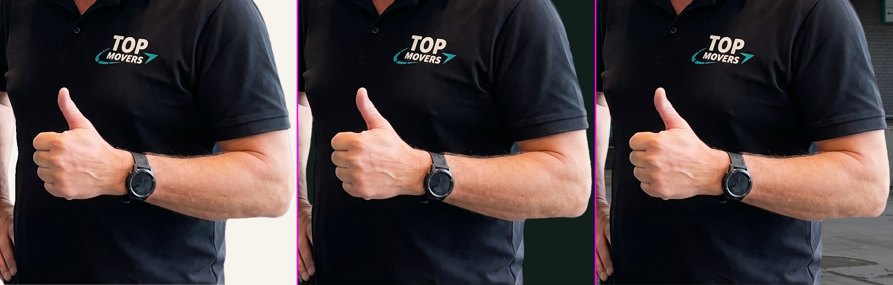
Zelfde drie mannen, kleding en houding, opnieuw gefotografeerd door het model op een egale magenta plaat; daardoor is de uitsnede tussen armen en lijven per definitie schoon. Gelijkenis en borstprint op 100% gecontroleerd.
Meting: randring 93 vs binnen 109, 20257 zachte randpixels, 53704 halftransparant
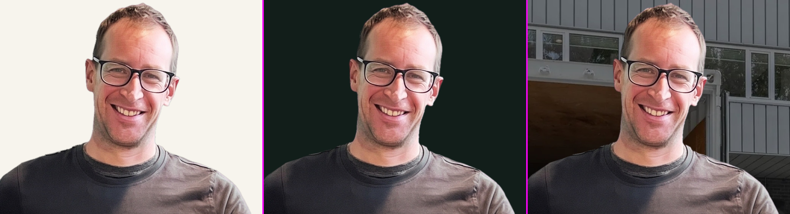
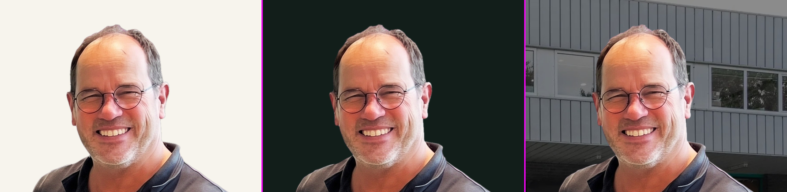
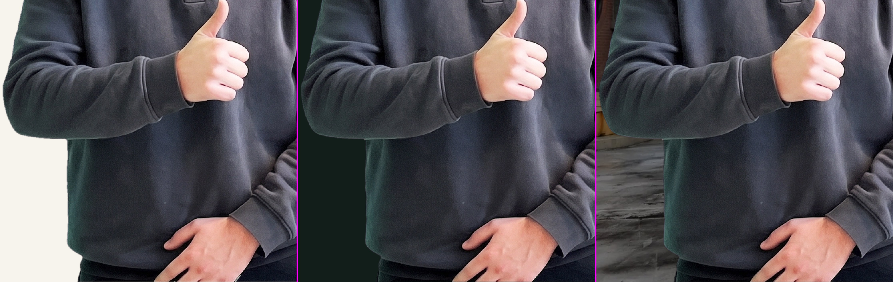
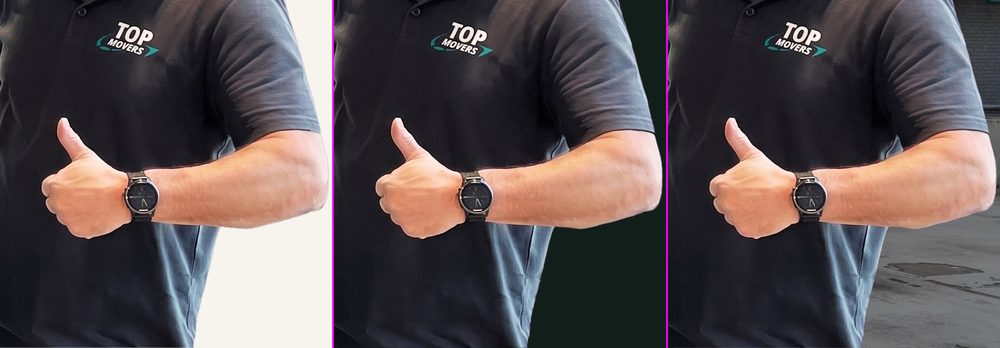